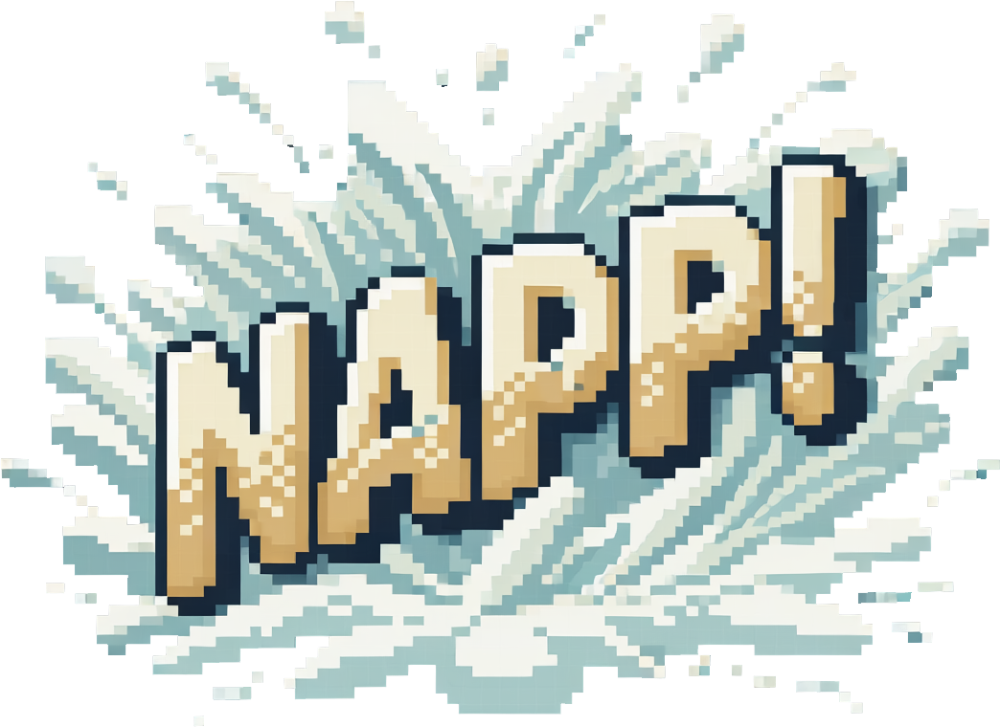
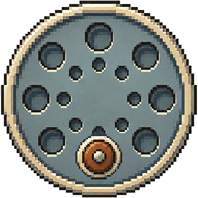
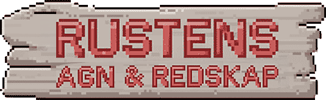

Vil du ha lyd?
JAKTEN PÅSTORKVEITA
Hvem fisker?
💰 0 kr


Velg dybde og kast ut.

STRØM→


Sluksett
Velg hva du fisker med. Agn brukes opp når fisken tar det — sluken ryker bare når snøret ryker.
Fisk!


🛒 Rustens agn & redskap
📖 Fangstboka


🦀 Teinetrekk
📨 Innboks
RINGER …
Velg fiskeplass.